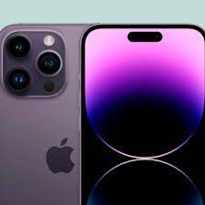
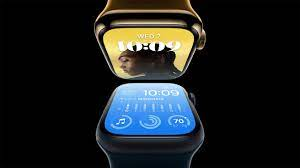
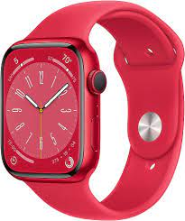

IPhone 15 Pro Blue
El iPhone 14 Pro y el iPhone 14 Pro Max son teléfonos inteligentes de gama alta diseñados y comercializados por Apple Inc. Son la decimosexta generación de iPhone, que viene a partir del iPhone 13 Pro y iPhone 13 Pro Max

IPhone 15 Pro Blue
El iPhone 14 Pro y el iPhone 14 Pro Max son teléfonos inteligentes de gama alta diseñados y comercializados por Apple Inc. Son la decimosexta generación de iPhone, que viene a partir del iPhone 13 Pro y iPhone 13 Pro Max
IPhone 15 Pro Metal
El iPhone 14 Pro y el iPhone 14 Pro Max son teléfonos inteligentes de gama alta diseñados y comercializados por Apple Inc. Son la decimosexta generación de iPhone, que viene a partir del iPhone 13 Pro y iPhone 13 Pro Max
Watch 36
El Apple Watch es un reloj inteligente diseñado y desarrollado por Apple Inc. Es el primer dispositivo portátil de Apple que se puede usar para hacer un seguimiento de la actividad física y la salud del usuario. El reloj se conecta a un iPhone para mostrar notificaciones y otras funciones
Apple Watch Scan
El Apple Watch es un reloj inteligente diseñado y desarrollado por Apple Inc. Es el primer dispositivo portátil de Apple que se puede usar para hacer un seguimiento de la actividad física y la salud del usuario. El reloj se conecta a un iPhone para mostrar notificaciones y otras funciones
